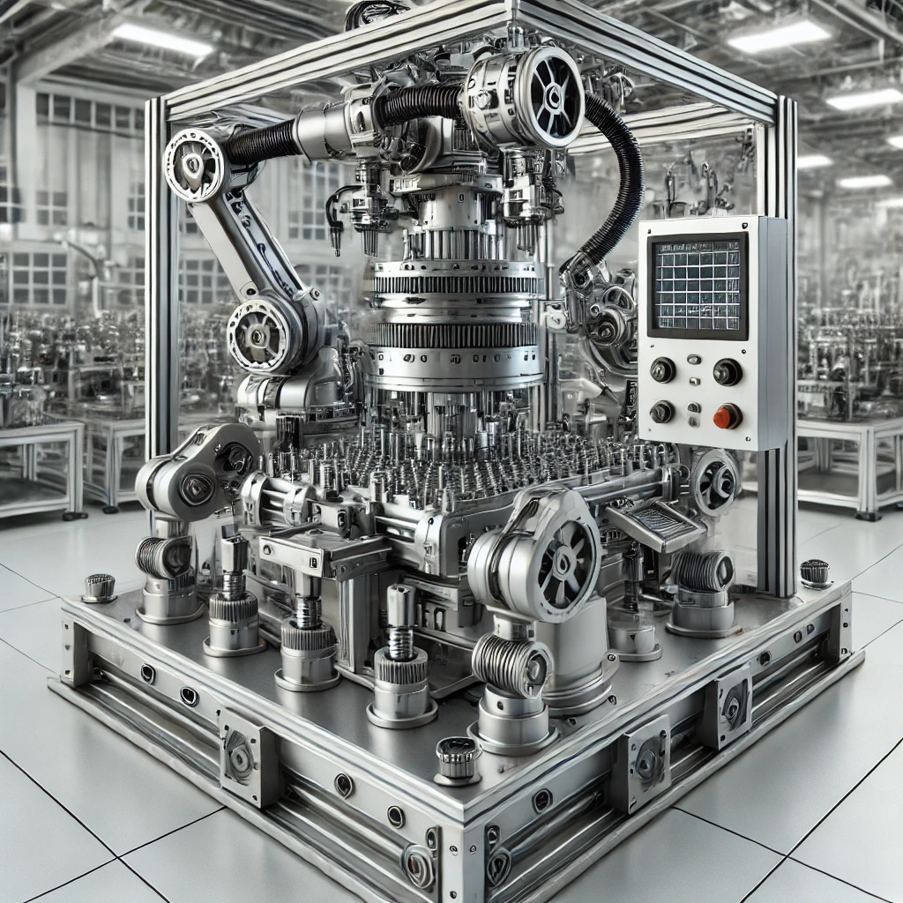

Montagemaschine
Diese Maschine ist speziell für die präzise Montage von Komponenten konzipiert. Mit mehreren robotischen Armen und einer Vielzahl von Werkzeugen kann sie komplexe Teile schnell und effizient zusammensetzen. Ein integriertes Steuerungssystem ermöglicht die Anpassung an unterschiedliche Produktionsanforderungen.
 Technische Informationen
Technische Informationen
Maschinenstatus:
